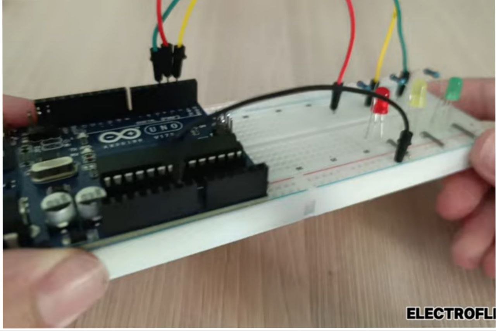

Project code
// Pins for each LED
int redLed = 2;
int yellowLed = 3;
int greenLed = 4;
void setup() {
pinMode(redLed, OUTPUT); // Set red LED pin as output
pinMode(yellowLed, OUTPUT); // Set yellow LED pin as output
pinMode(greenLed, OUTPUT); // Set green LED pin as output
}
void loop() {
// Turn on green LED
digitalWrite(greenLed, HIGH);
delay(5000); // Green stays on for 5 seconds
// Turn off green, turn on yellow
digitalWrite(greenLed, LOW);
digitalWrite(yellowLed, HIGH);
delay(2000); // Yellow stays on for 2 seconds
// Turn off yellow, turn on red
digitalWrite(yellowLed, LOW);
digitalWrite(redLed, HIGH);
delay(5000); // Red stays on for 5 seconds
// Turn off red
digitalWrite(redLed, LOW);
}